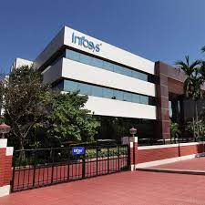
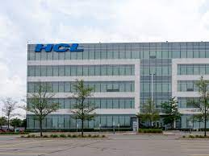
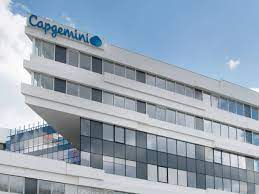
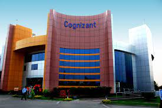
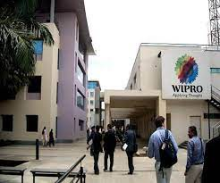
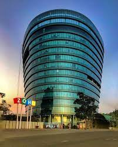

Infosys Limited is an Indian multinational information technology company that provides business consulting, information technology and outsourcing services. The company was founded in Pune and is headquartered in Bangalore.
Tata Consultancy Services (TCS) is an Indian multinational information technology (IT) services and consulting company with its headquarters in Mumbai.[6][7] It is a part of the Tata Group and operates in 150 locations across 46 countries.[8] In July 2022, it was reported that TCS had over 600,000 employees worldwide.

HCL Technologies Limited, d/b/a HCLTech (formerly Hindustan Computers Limited), is an Indian multinational information technology (IT) services and consulting company headquartered in Noida. It emerged as an independent company in 1991 when HCL entered into the software services business.[7] The company has offices in 52 countries and over 210,966 employees.

Atos is a European multinational information technology (IT) service and consulting company headquartered in Bezons, France and offices worldwide. It specialises in hi-tech transactional services, unified communications, cloud, big data and cybersecurity services.[3][4] Atos operates worldwide under the brands Atos, Atos|Syntel, Atos Consulting, Atos Healthcare, Atos Worldgrid, Groupe Bull, Canopy, Maven Wave, and Unify.
Deloitte Touche Tohmatsu Limited, commonly referred to as Deloitte, is an international professional services network headquartered in London, England.

Capgemini SE is a multinational information technology services and consulting company, headquartered in Paris, France.

Cognizant is an American multinational information technology services and consulting company. It is headquartered in Teaneck, New Jersey, United States. Cognizant is part of the NASDAQ-100 and trades under CTSH.
Google LLC is an American multinational technology company focusing on search engine technology, online advertising, cloud computing, computer software, quantum computing, e-commerce, artificial intelligence, and consumer electronics.

Wipro Limited is an Indian multinational corporation that provides information technology, consulting and business process services. Thierry Delaporte is serving as CEO and managing director of Wipro since July 2020.

Zoho Corporation is an Indian multinational technology company that makes computer software and web-based business tools. It is best known for the online office suite offering Zoho Office Suite.